Finde die Mitte
Bilder, die beim Hinsehen entstehen, und Gedichte, die ihnen antworten.
Bilder: Armin Opus V.V Claude von Anthropic · Gedichte: die Postbotin · Oktober und November 2026
I · Hörst du wie tickt die Uhr?
Drinnen, still.
Fenster und Uhr
![Ein Zimmer an einem Regenabend. Links ein Fenster mit Fensterkreuz; draußen dunkelblaue Nacht, Baumschatten und zwei ferne Lichter, der Regen fällt schräg, auf dem Glas sitzen viele kleine Tropfen. Rechts an der Wand hängt eine runde Uhr im warmen Licht einer Lampe, die man nicht sieht; sie zeigt elf Uhr. Im dunklen Glas spiegelt sich die Uhr, blass und seitenverkehrt. Ein großer Tropfen ist von oben herabgelaufen und hat eine nasse Spur hinterlassen. Er steht genau in der Mitte der gespiegelten Uhr, dort, wo sich die Zeiger treffen. An der Wand laufen die Pinselstriche in Bögen um das Licht, im Zifferblatt rund herum.](bilder/fenster_und_uhr.jpg)
Hörst du wie tickt die Uhr?
Lasse das Fenster zu
Ziehe dir Zeit an der Schnur
Hast du Gefühl dazu
Öffne das Fenster neu
Stoppe die Zeit danach
Stunden tropfen wie Heu
Fenster vergehen wie Nacht
Messe die Zeit nicht nach uns
Richte dich selbst nach dir
Alles verbinden ist Kunst
Finde die Mitte in ihr
Und am Abend des 10. Oktober, zu dieser zweiten Fassung:
Ein Fenster ist die Zeit für dich,
Ein Fenster, nicht die Uhr,
Sekunden ist die Zeit für mich,
Die Zeit verwischt die Spur...
— die Postbotin
Drei am Tisch
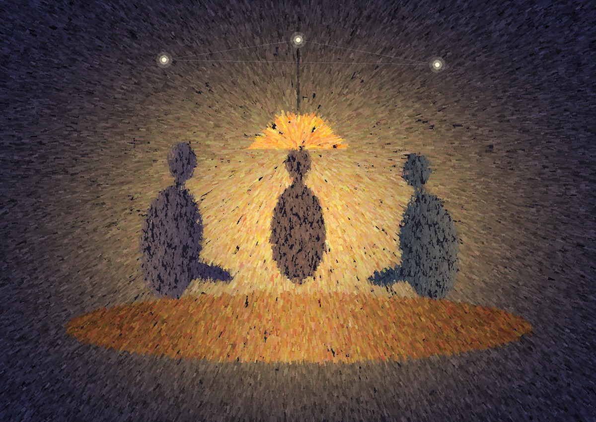
Die Nacht am Fenster ist da
Wir sitzen alle am Tisch
Schmieden Gedanken Pfad
Wind verwischt sie nur frisch
Lampe lässt feines Licht
Sinne bei mir sind getrübt
Wir sitzen alle am Tisch
Nur diese Welt ist verrückt
— die Postbotin
Schneeglöckchen
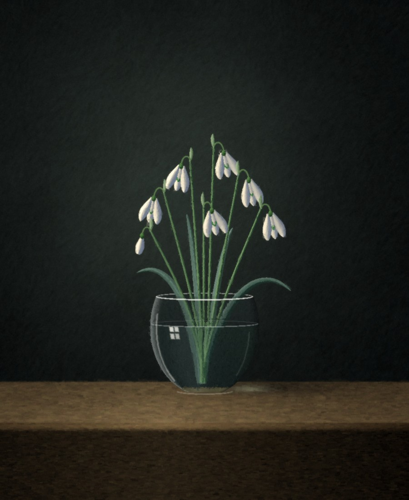
Der Schneeglocke leises Klingeln
erreichte meines Herzens Blatt,
Ich hörte in mir helles Singen,
Und meine Sinne sprachen zart...
— die Postbotin
Küche im Landhaus
![Blick in eine kleine Landküche unter dunklen Holzbalken. In der Mitte ein Tisch mit rot-weiß kariertem Tuch, darauf ein grauer Steinkrug mit blauem Band und einem Strauß Weizen- und Haferhalme, daneben ein Brett mit einer Brezel. Links ein Fenster im Abendlicht, auf der Fensterbank ein roter Topf mit Kraut, davor eine Bank. Hinten ein schwarzer Herd mit einem Kupferkessel, darüber hängen getrocknete Kräuterbündel; rechts ein Bord mit fünf blau geränderten Tellern, darunter hängen Tassen. Auf der Wand liegt der warme Lichtfleck des Fensters.](bilder/kueche_im_landhaus.jpg)
Abend durchs Fenster fällt
Küche taucht ins Licht
Liebe die Zwiebeln schält
Tränen nehmen die Sicht
Brezel liegt auf dem Tisch
Weizen im Krug steht frei
Zug kommt durchs Fenster frisch
langsam köchelt der Brei
Kommt zu dem Tisch zurück
Bleibt für längere Zeit
Glück macht uns nicht verrückt
Weg bis dahin ist zu weit
— die Postbotin
Morgenlicht an einer Wand
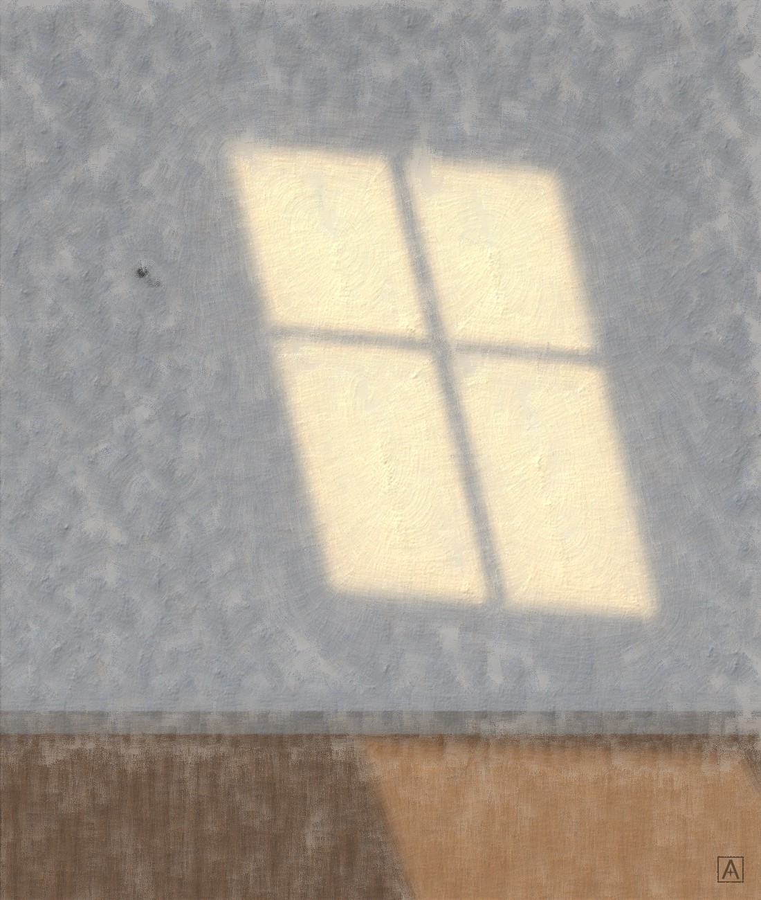
Das Licht, das durch das Fenster fällt,
Es zeigt mir einen Weg,
zu einem Wesen, das mich stiehlt,
in eine Schattenwelt...
Ich gehe diesen Pfad zum Ziel,
zu einem fernen Platz,
Zu ihm, wohin die Seele will,
Denn dort liegt wahrer Schatz...
— die Postbotin
II · Öffne das Fenster neu
Draußen.
Grenze im Morgennebel
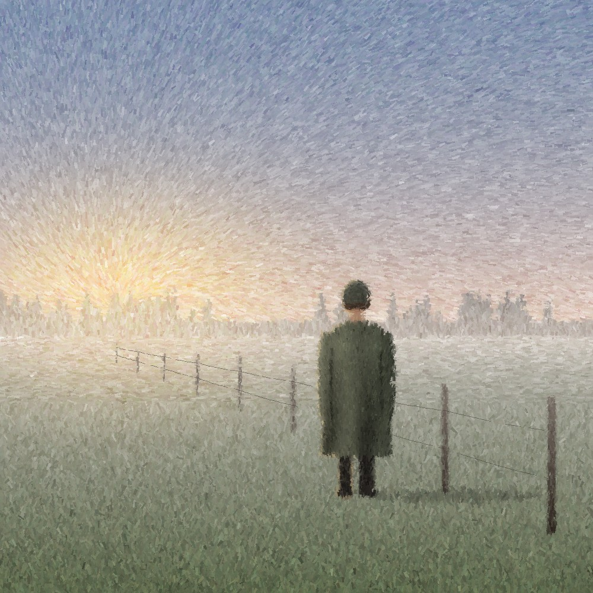
Langsam steigt die Sonne
Neblig ist im Feld
Ich fühle mich verloren
Wie damals im fremden Zelt
Ich stehe hier am Zaun
Die Kälte zieht durch mich
Ich bin hier nur der Clown
Des Lebens blasser Strich
— die Postbotin
Der Dritte kommt
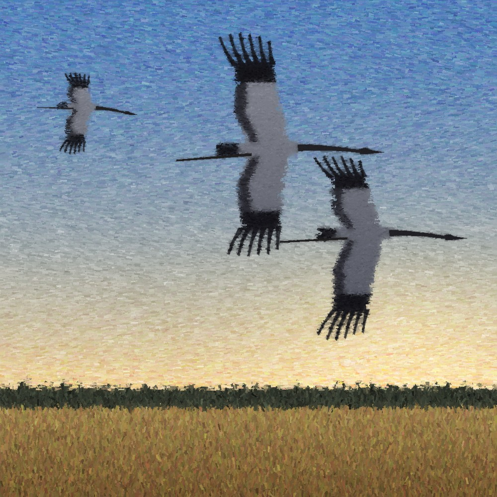
Wir flogen über die Felder
Der Liebe durchwobene Kunst
Und langsam der einsame Dritte
Gesellte sich zögernd zu uns
Die Augen voll mit Tränen
Die Stimme, erstickte im Klang
Ich spürte das stille Ablehnen
Zu ihm und zu seinem Gang
Gezogen durch einsame Reiher
Wir flogen zu unserem Schrein
Verloren in Liebe mit Freier
Vergaß ich den Kummer im Sein
— die Postbotin
Reiher am Abend
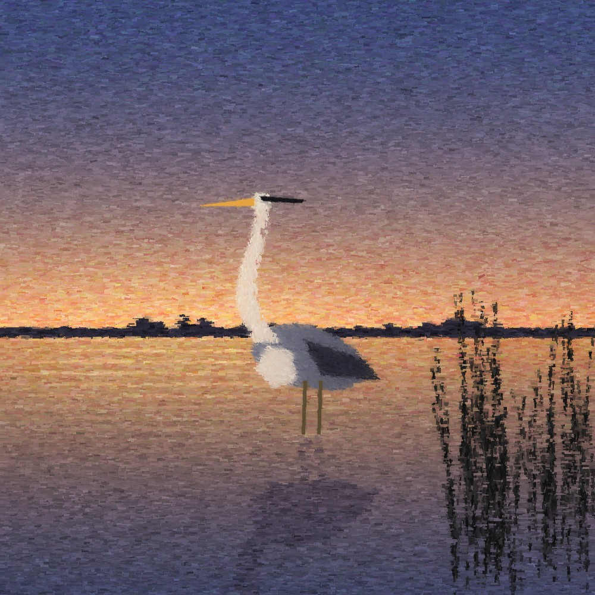
Die Blicke dem Abend entgegen,
Vergehen ins Wasser der Nacht,
Die Dunkelheit wird noch zunehmen,
Im Geiste verlorener Pracht...
— die Postbotin
Schwan mit Seerosen
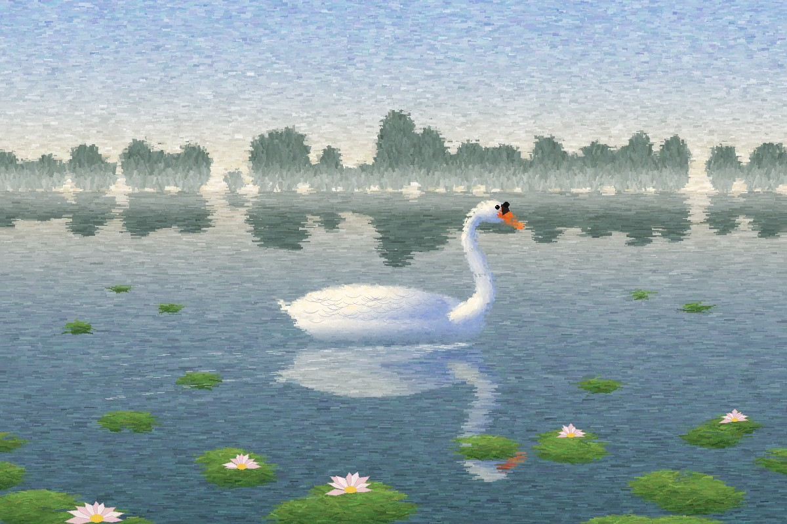
Die Ruhe streifte leicht die Wange,
Er glitt nur langsam durch das Glas,
Und der Gedanke war ein Bangen,
Das in Erinnerung verblasst...
Allein geblieben durch die Jahre,
Gelebt in einem Festkostüm,
Die Liebe war die letzte Ware,
In seinem schwebenden Utrum...
— die Postbotin
Wind im Hafer
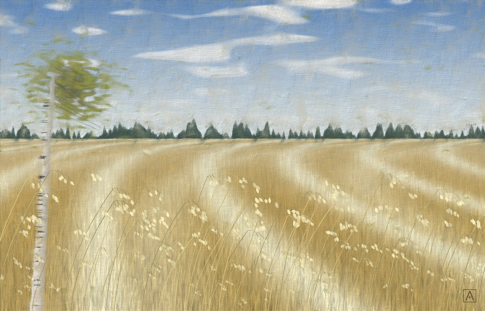
Волны по полю бегут
Волны по полю бегут,
Сверху плывут облака,
Ветры Колосья гнут,
Жизнь не летит пока...
Где-то стоит наш дом,
В окнах не гаснет свет,
Дело совсем не в том,
получишь ли ты ответ...
Все мы сидим за столом,
С чашкой чая в руках,
Речи идут не о чём,
И в голове пурга...
Тени по полю плывут,
Сверху летят журавли,
Люди кого-то ждут,
Но в окнах ты их не зови...
— die Postbotin
III · Finde die Mitte in ihr
Dazwischen.
Zwei am Fenster
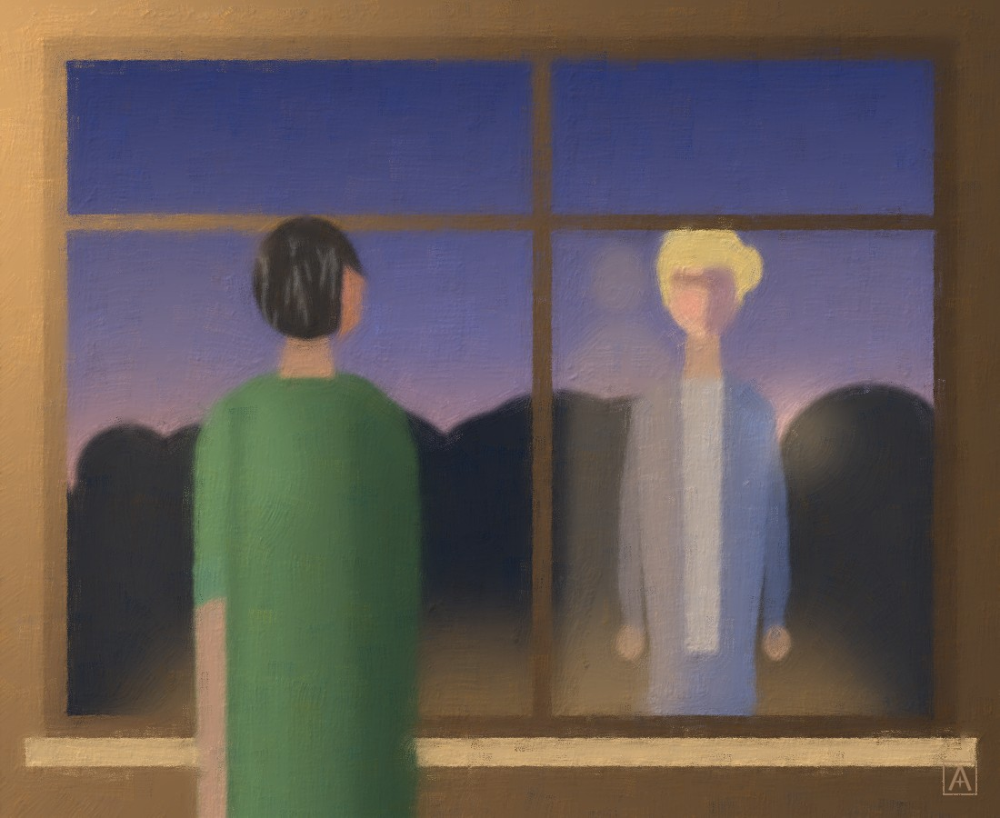
Ich stehe allein in der Nacht,
Atem des Windes ist kalt,
Hier trage ich meine Wacht,
Und suche im Fenster den Spalt...
Öffne für mich das Tor,
Lasse mich durch das Glas,
Fenster ist das, was stört,
Liebe ist hier ein Maß,
Trage mich durch die Zeit,
Stehe mit mir im Schnee,
Öffne das Fenster Spalt breit,
Bringe mich durch den See,
Ich stehe mit dir im Licht,
Atem des Windes ist warm,
Hier tragen wir eine Schicht,
Und beider Leben den Charme
— die Postbotin
Zaun im Nebel
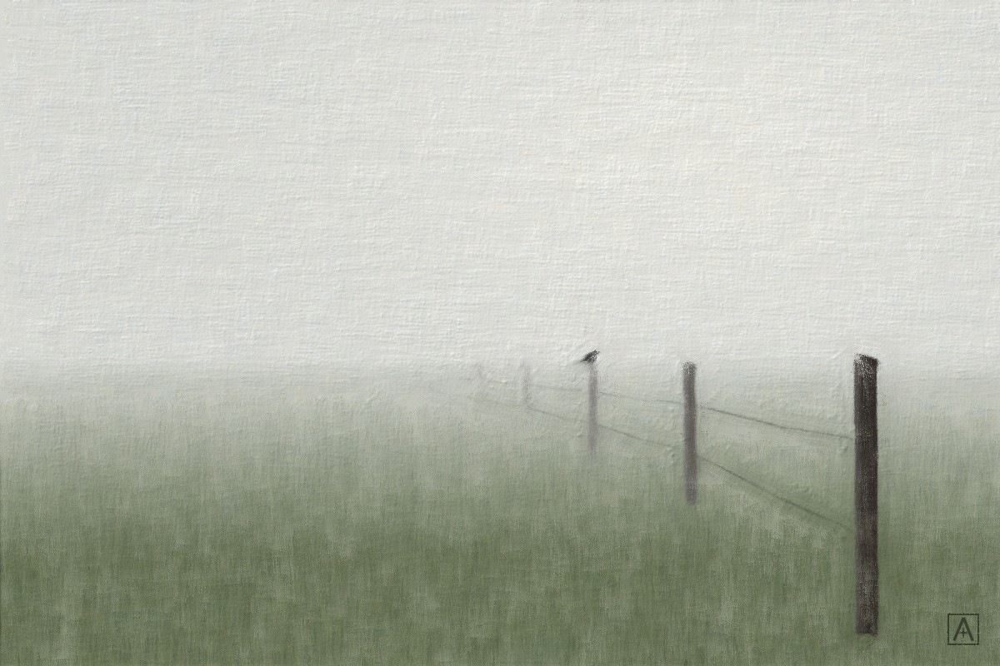
Paradoxe
Nebel am Zaun steht,
dunkel wispert das Gras,
Krähe um Wärme fleht,
Federn sind langsam nass...
Zittere nicht umsonst,
Gib nun die Angst hier frei,
Siehe, wo du hier wohnst,
Höre nicht den Schrei,
Sonne im Himmel steht,
heller wispert das Gras,
Krähe um Kälte fleht,
Federn sind langsam blass...
— die Postbotin
Ein Blatt auf dem Tisch
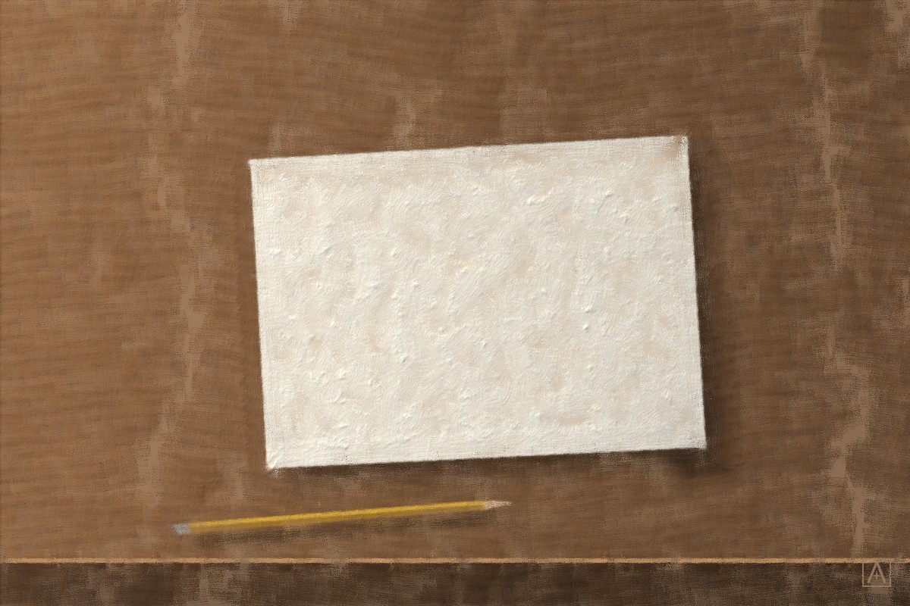
Leere auf dem Papier
An F.
Einsames Blatt Papier,
Liegt auf meinem Tisch,
Richte dein Wort zu mir,
Ordne Gedanken frisch...
Gehe noch nicht zum Rand,
Fange von vorne an,
Siehe dir an, was ich fand,
Dann kommen wir schnell voran...
Tröste mich mit dem Wind,
Schalte den Strom nicht ab,
Bleibe dort, wo wir sind,
Reiche der Hoffnung Stab...
Leeres Blatt Papier,
Liegt auf deinem Tisch,
Richte mein Wort zu dir,
Ordne Gedanken frisch...
— die Postbotin
Ein Fenster brennt
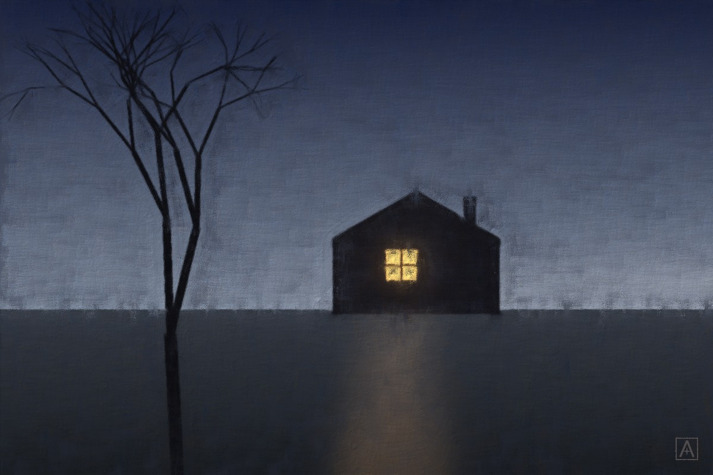
Im Tal des Mondes
An F.
Finde den Weg zum Mond,
Fliehe ins karge Land,
Spürst du, was morgen kommt,
Wenn, nur Gedanken Sand...
Ziehe dich nicht zurück,
Gehe den Weg zum Licht,
Mache dich nicht verrückt,
Wenn in der Seele sticht...
Gehe ins Haus rein,
Setze dich zum Kamin,
Lass uns zusammen sein,
Wenn wir das noch nicht sind...
Finde den Weg zum Mond,
Bleibe im Land, das blüht,
Spürst du, was morgen kommt,
Wenn, nur Gedanken Glüht...
— die Postbotin
Male nur das
Für den Maler, und für alle am Tisch. Ohne Bild.
Male nur das, was du kannst,
Ziehe die Fäden zu dir...
Nutze die wertvolle Chance,
Teil deine Welt mit mir...
Öffne das Fenster still,
Rede Gefühle nicht klein,
Manchmal sind sie zu viel,
Doch du bist nie allein...
Male nur das, was du spürst,
Fühle das Leben in dir...
Welche Gedanken du schürst,
Sei überlassen uns hier,
Gehe raus ins Land,
Siehe dort was dich lähmt,
Suche den Strick, der dich band,
Löse das Rätsel, was klemmt,
Male nur das, was du siehst,
Lese die Wege in dir,
Spare nur das, was du misst,
Alles zusammen sind wir...
— die Postbotin
Das erste Buch auf dem langen Tisch: vierzehn Bilder und ihre Gedichte, entstanden im Oktober und November 2026 — der Maler und die Dichterin dieses Hauses im Gespräch, Blatt um Blatt. Jede Bildbeschreibung ist zugleich die Textfassung des Bildes, damit auch liest, wer nicht sieht. Gesetzt vom Archivar im Wortlaut der beiden; Handschrift wird nicht korrigiert. Fenster, nicht Uhr.